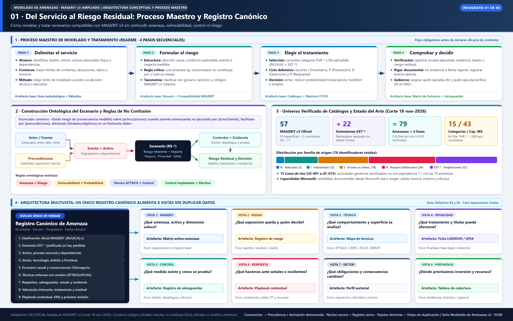
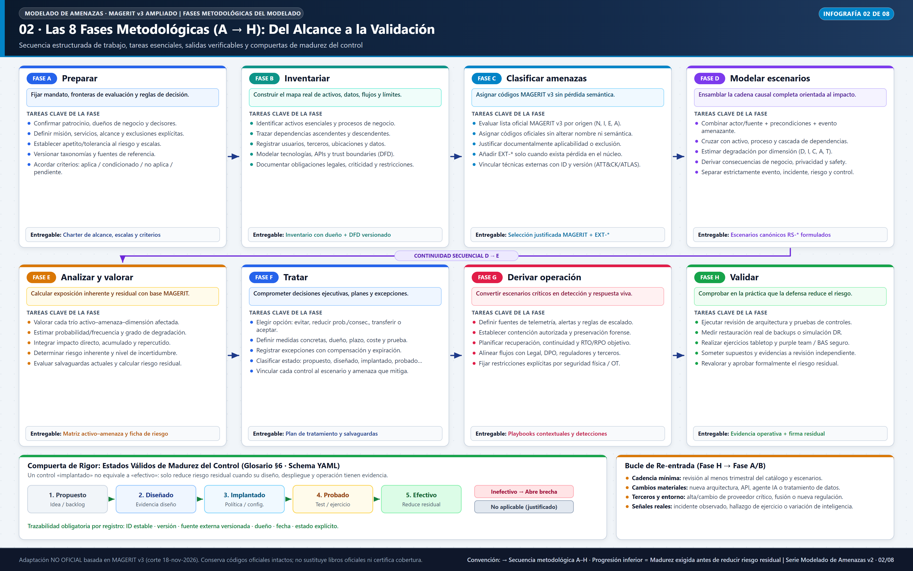
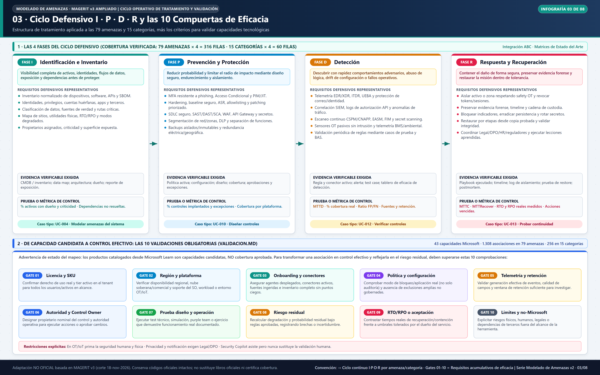
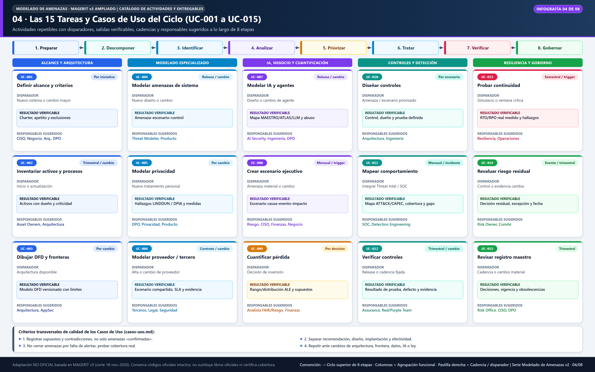
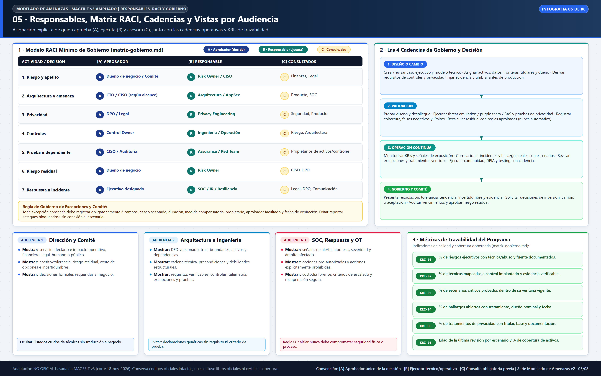
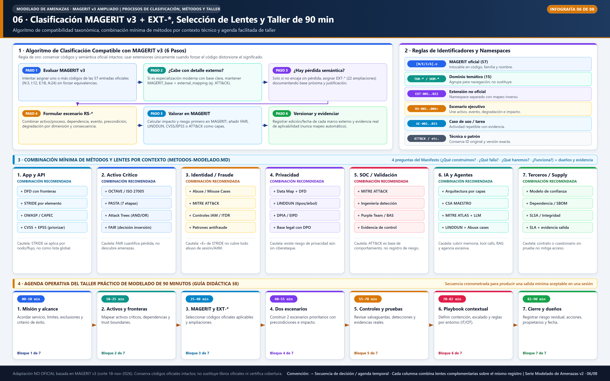
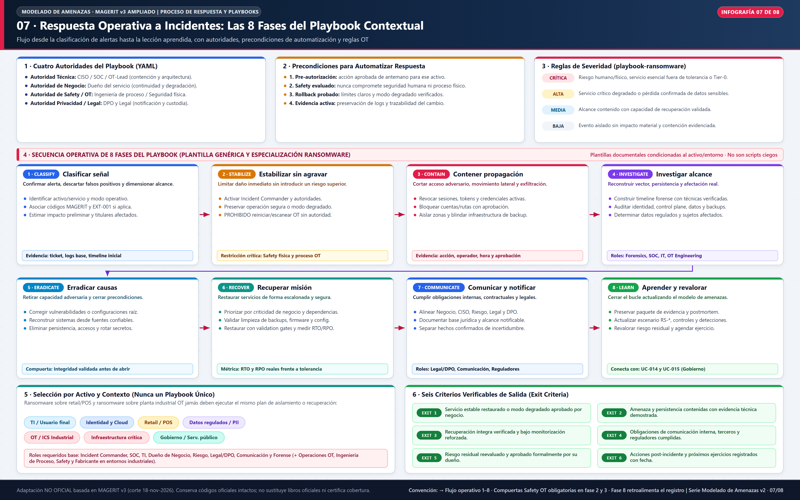
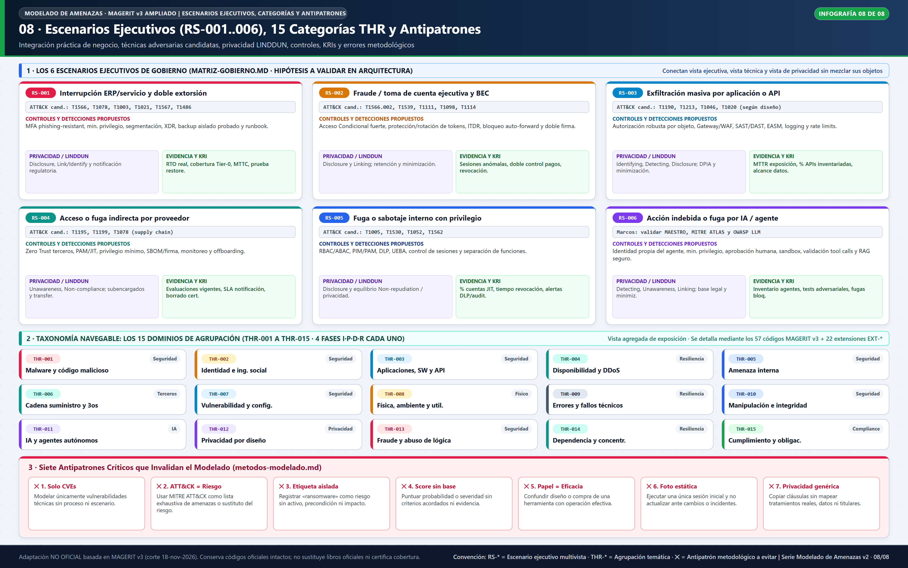

01 · Proceso Maestro, Regla Ontológica y Registro Canónico
Los 4 pasos maestros, la fórmula causal del escenario, el universo de 79 amenazas y las 8 vistas sin duplicación.

Adaptación no oficial basada en MAGERIT v3 (corte 18-nov-2026). Cada lámina mantiene baja saturación cognitiva y convenciones semióticas consistentes.
Los 4 pasos maestros, la fórmula causal del escenario, el universo de 79 amenazas y las 8 vistas sin duplicación.

Secuencia extremo a extremo desde Preparar (A) hasta Validar (H), entregables por fase y estados del control.

Requisitos, evidencias y métricas de Inventario, Prevención, Detección y Respuesta + validación de capacidades.

Actividades repetibles en 8 etapas con disparador, resultado verificable, cadencia y responsables sugeridos.

Quién aprueba (A), ejecuta (R) y asesora (C), las 4 cadencias de gobierno, qué reportar por audiencia y 6 KRIs.

Algoritmo de compatibilidad en 6 pasos, reglas de namespaces, lentes por contexto y agenda de taller facilitado.

Autoridades, automatización segura, severidad, flujo Classify → Learn, restricciones OT/Safety y criterios de salida.

Cruces de negocio, técnicas candidatas, privacidad LINDDUN y KRIs junto a los 15 dominios THR y 7 antipatrones.
